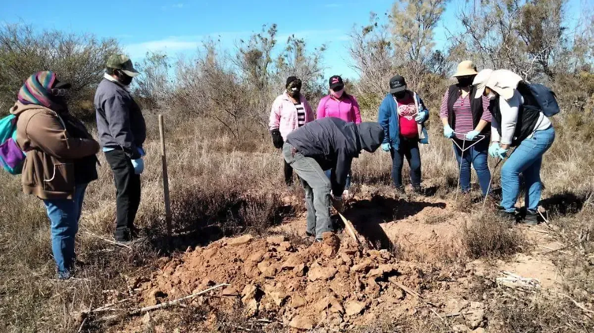

Varillas
Se clavan en el suelo; el olor al sacarlas puede indicar restos.
Cómo se organiza una búsqueda en campo y a qué riesgos se enfrentan las buscadoras.
Las madres buscadoras son familiares de personas desaparecidas que se organizan en colectivos en distintos estados del país. Buscan en terrenos baldíos, cerros, brechas y predios donde puede haber fosas clandestinas.
Muchas empezaron solas, ante la falta de respuesta de las fiscalías, y hoy se coordinan con otros colectivos para compartir información y herramientas.

Se clavan en el suelo; el olor al sacarlas puede indicar restos.
Para excavar con cuidado y no dañar posibles restos.
Varias buscadoras han sido amenazadas, atacadas o asesinadas.
Gran parte del equipo y los traslados se pagan con dinero de las familias.